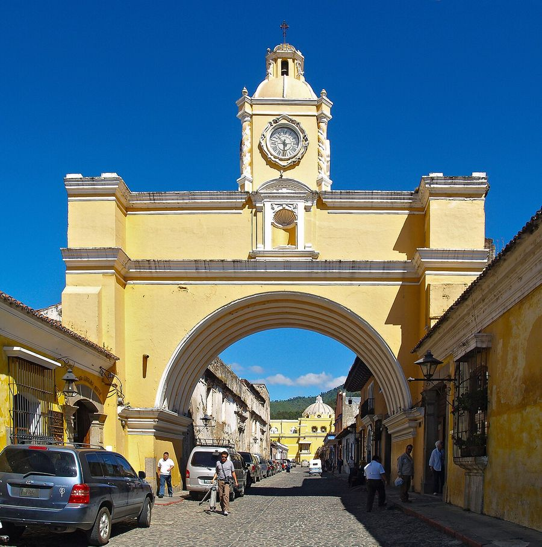
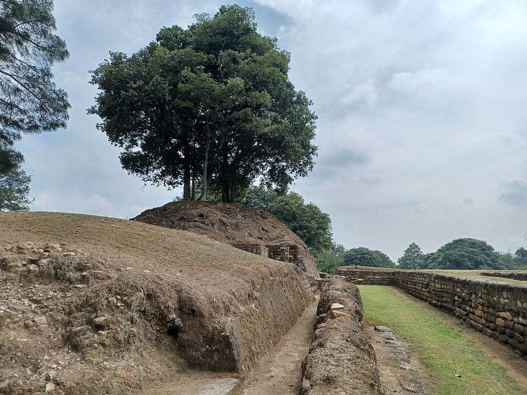
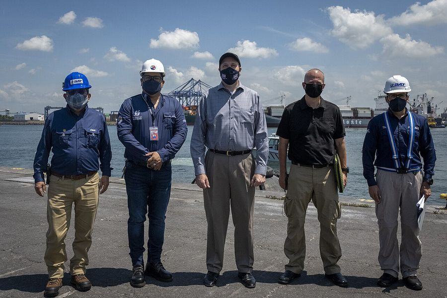

Puerto Quetzal
Guatemala · 13.9260°N 90.7860°W

Adalberto.H.Vega uploaded and derivative work: MrPanyGoff · CC BY 3.0
{kind=link}
Make this Notebook Trusted to load map: File -> Trust Notebook
Điểm tham quan

Antigua Guatemala (UNESCO) ≈1,5 h — Arco de Santa Catalina, tu viện đổ nát, núi lửa Agua/Fuego- hồ Atitlán & làng Panajachel/Santiago (xa hơn) not found

Iximché (Maya)
Guatemala City — Bảo tàng Popol Vuh, Museo Ixchel- leo núi lửa Pacaya not found
Dệt may & smart textile
- - **VESTEX (Asociación de la Industria del Vestuario y Textiles de Guatemala)** — hiệp hội đại diện ngành xuất khẩu chủ lực; tổ chức **Apparel Sourcing Show** hơn 29 năm. - Guatemala đã **vượt mô hình maquila**: nay có đủ chuỗi từ kéo sợi, dệt vải, may, hoàn tất tới phụ liệu; chuyên **knitwear và sportswear** giá trị cao. Puerto Quetzal cách trung tâm sản xuất ~80 km. - Di sản rất mạnh: **Museo Ixchel del Traje Indígena** (Guatemala City) — bảo tàng trang phục bản địa; huipil dệt khung lưng (backstrap loom), nhuộm cochineal/chàm ở Antigua và hồ Atitlán. Nếu quan tâm cấu trúc dệt thủ công làm nền cho e-textile, đây là điểm đáng đi nhất Trung Mỹ nearest match was 11,747 km away; not used